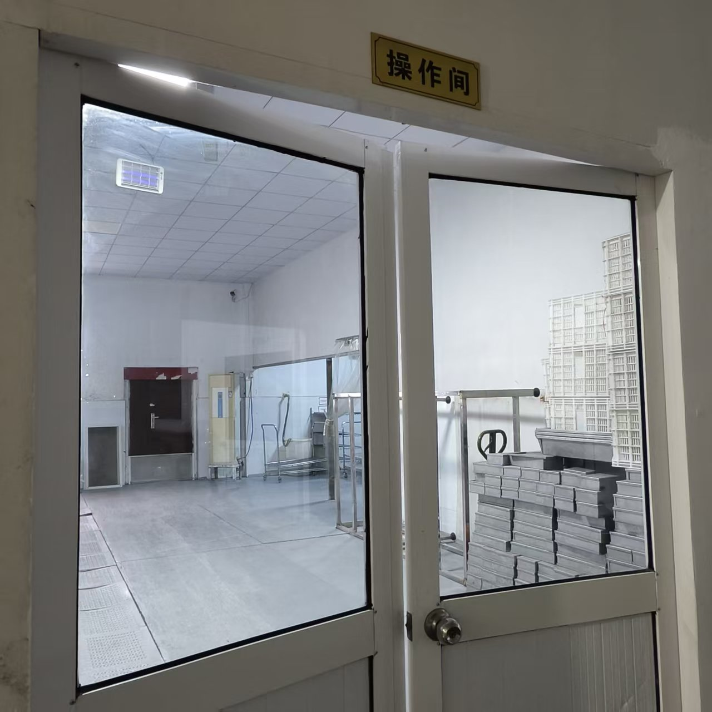
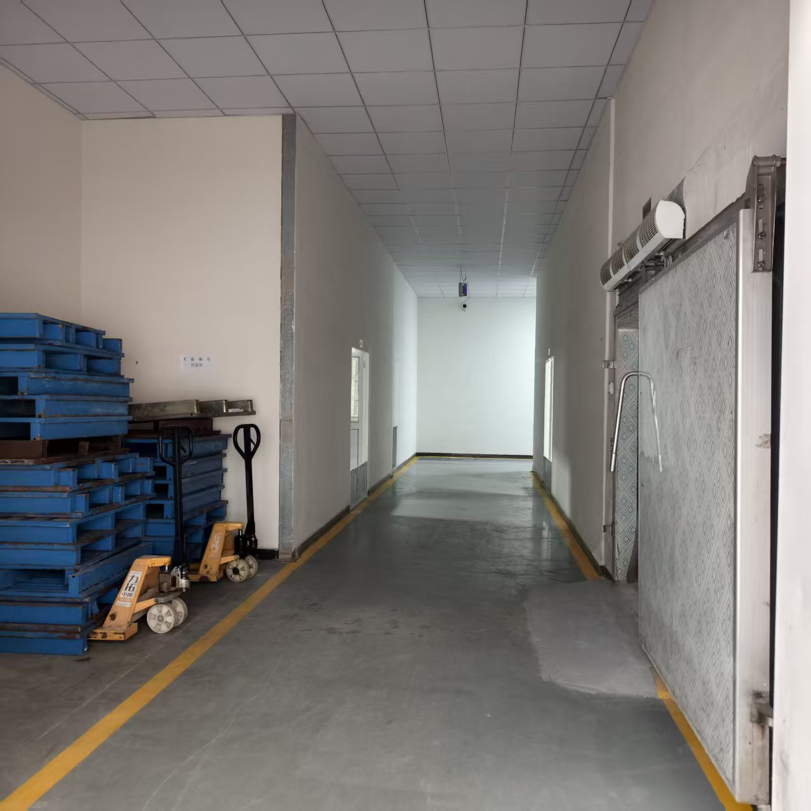

现场实拍 / 操作间入口 03 — 14
FACTORY FIELD NOTES / 202601 / ABOUT以现场为介绍
让真实，
成为了解的开始。
14张现场照片
06个展示分区
03组互动设备示意
SPACES & DETAILS
一间工厂，不同视角。
点击分区，查看对应实景
02 / THE FACTORY, AS IT IS
真实光影里的工厂。
保留原照片光影与色彩
点击照片，放大查看现场细节
03 / INTERACTIVE EQUIPMENT
换个角度，了解设备。
拖动旋转 · 滚轮缩放 · 点击标记查看部件
根据实拍搭建的外观示意模型
3D STRUCTURE VIEWEXTERIOR STUDY
正在加载设备模型…
MODEL 01 / 03示意模型 · 非工程图纸
模型依据单张或少量照片近似搭建，未还原内部机构、实际尺寸及运行参数。动画仅用于外观展示，不构成设备操作说明。

FROM ONLINE TO ON-SITE